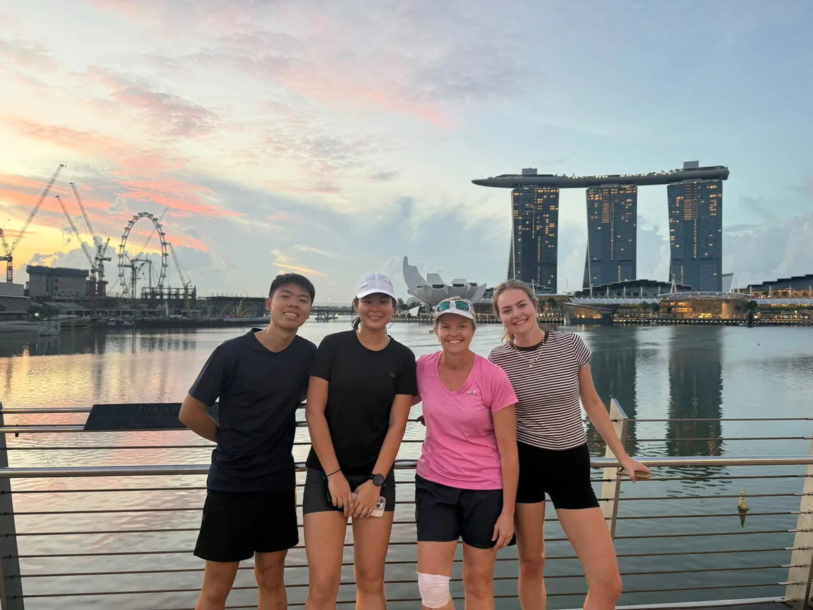
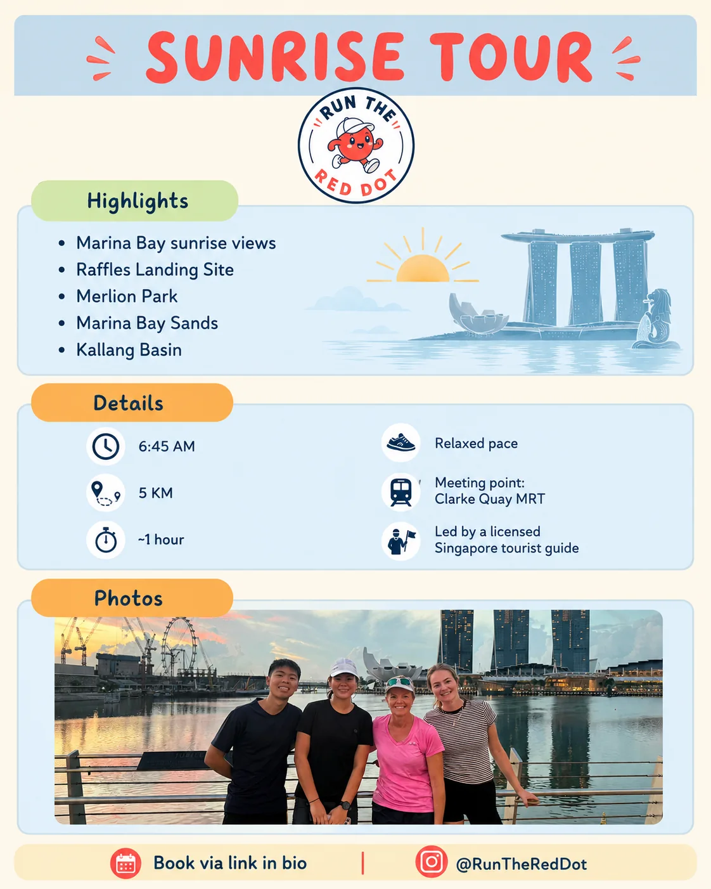
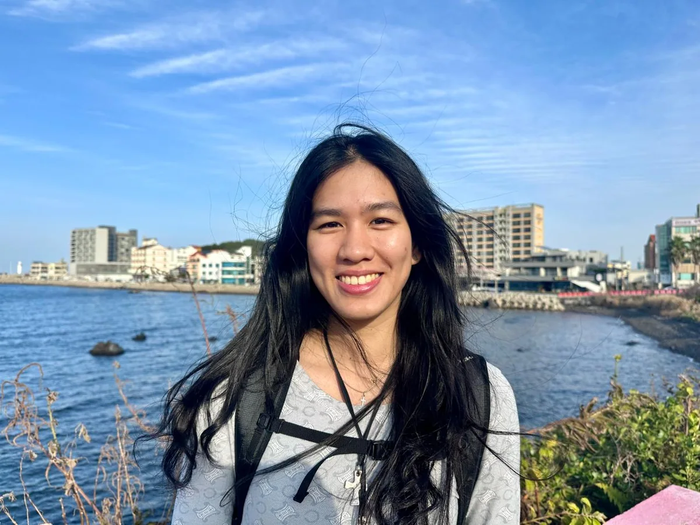
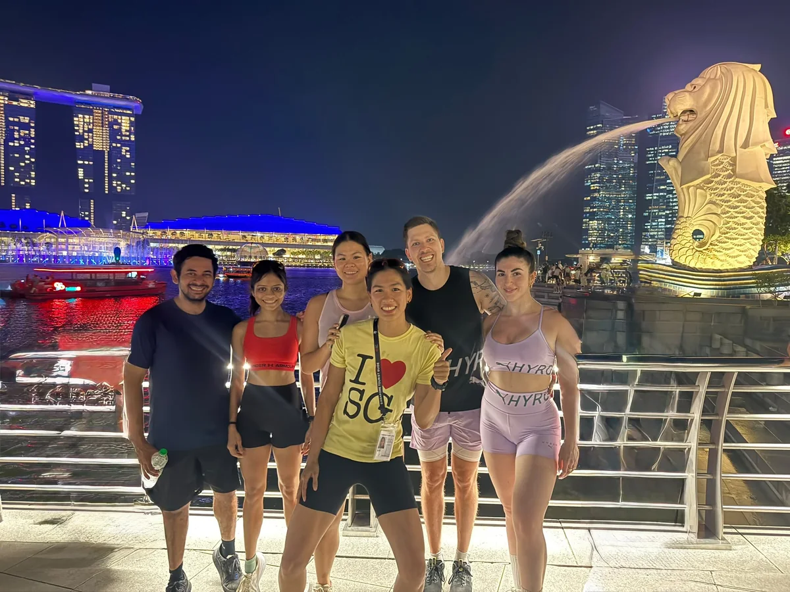

Sunrise Run 🌅
Watch Singapore wake up as we run from the Singapore River towards Marina Bay, with stories of the city’s transformation and plenty of photo stops along the way.
S$30 / person
Run through Singapore at its best — sunrise, city lights, local stories and good company. Created by Atalia, a runner and licensed Singapore tourist guide.


I’m a runner and licensed Singapore tourist guide. I created Run the Red Dot because I wanted people to experience Singapore differently — not just seeing the city, but moving through it.
Each run brings together Singapore stories, carefully chosen routes, photo stops and the simple fun of exploring with other people.
The best way to experience a city is to move through it.
Two signature ways to experience Singapore — one as the city wakes up, the other after the lights come on.

Watch Singapore wake up as we run from the Singapore River towards Marina Bay, with stories of the city’s transformation and plenty of photo stops along the way.

See Singapore after dark through illuminated waterfronts, skyline views and local stories — an easy social run through the city at night.
You can run Singapore on your own. RTRD gives you the context, people and moments that turn the route into an experience.
Easy kilometres, good people and sunrise views. We’re exploring a social run club for locals, expats and travellers who want to start the weekend moving through the city together.
Run the Red Dot sits at the intersection of tourism, running and community.
To help people experience Singapore in a more active, personal and meaningful way through running, storytelling and human connection.
To become Singapore’s leading running experience brand, bringing locals and travellers together to discover the city in motion.
Choose your experience and see the city from a different perspective.